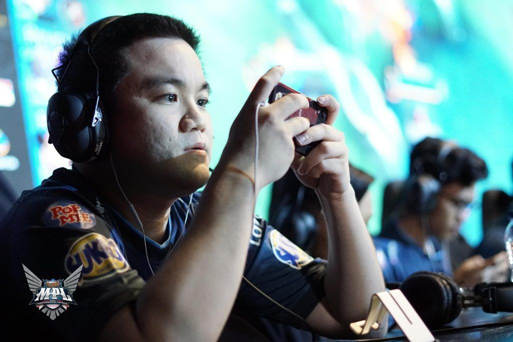
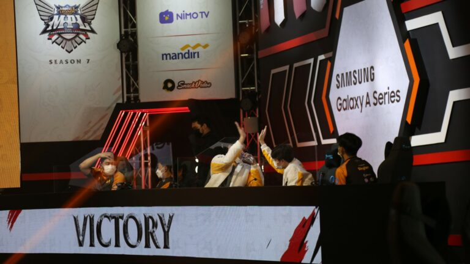

Tzy Community©
Donkey: ONIC bakal jumpa EVOS di grand final MPL ID Season 7

MPL ID Season 7 sedang memasuki pekan istirahat. Setelah delapan pekan beruntun menjalani regular
season, enam tim yang lolos mendapat jeda waktu sampai playoff digelar.
Persaingan musim ini terbilang sangat ketat. Enam tim yang lolos bisa dibilang punya kekuatan
berimbang dan mampu saling mengalahkan. Hanya konsistensi yang benar-benar menentukan posisi di
klasemen.
Menengok dari faktor tersebut, ONIC Esports dan EVOS Legends yang mendapat priviledge ke upper
bracket karena finis di dua teratas. ONIC terbilang paling mendominasi karena memiliki poin
tertinggi dan jumlah menang terbanyak.
Sementara EVOS Legends, RRQ Hoshi, dan Bigetron Alpha sangat tipis perbedaannya karena jumlah total
kemenangan yang mirip Baca Selengkapnya.....
Grand final MPL ID Season 7 pakai sistem Best of 7
Playoff MPL ID Season 7 menjadi salah satu ajang esports yang paling dinanti di Indonesia. Euforia sudah mulai terasa sampai sekarang. Angka jutaan viewers sudah jaminan bagi MPL, terlebih untuk fase akhir seperti playoff. Pada season 7 ini, playoff digelar 30 April – 2 Mei 2021. Sistem play-in akan menjadi permulaan, untuk menggugurkan dua tim. Setelah itu baru upper-lower bracket berjalan. Ada satu yang berbeda dari playoff season 7 ini yakni grand final akan dilakukan dengan sistem best of 7. Ini adalah pertama kalinya sepanjang sejarah MPL BO7 dipraktikkan. Baca Selengkapnya.....
Jasa Joki Terpercaya

2022 masih di stuck Epic? Joki di Abs Net aja.
Harganya Murah, Pengerjaan cepat dan
Terpercaya
Jasa Topup Diamond

Hari gini masih belum punya Skin Favorit lo?
Ayo Topup di Tzy Store, Harganya Murah, pengerjaan
cepat dan 100% Aman